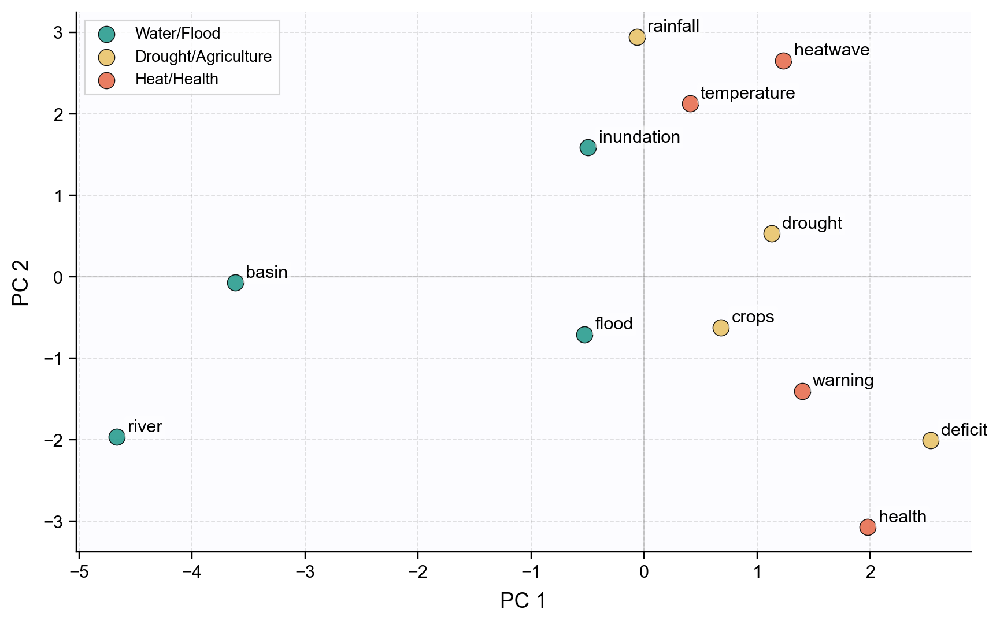

Remark
These lecture notes are in early access and will continue to evolve based on classroom experience and feedback.
2.3. Word Embeddings and Distributional Semantics#
Section Goal
By the end of this section you will understand why dense word vectors address the limitations of sparse representations, be able to derive the intuition behind distributional embeddings from a co-occurrence matrix, train a small word2vec model, use pretrained embeddings from Gensim, perform vector arithmetic, and discuss when static embeddings are and are not sufficient.
2.3.1. Learning objectives#
By the end of this section, you should be able to:
State the distributional hypothesis and explain how it motivates word embeddings.
Sketch the path from a raw co-occurrence matrix to a dense embedding (PPMI, SVD).
Describe the skip-gram training objective of word2vec in plain language.
Train a small word2vec model and inspect nearest neighbors.
Load pretrained GloVe or word2vec vectors and perform similarity queries.
Demonstrate vector arithmetic analogies (e.g., king − man + woman ≈ queen).
Produce a 2-D visualization of an embedding space using PCA.
Compare word2vec, GloVe, and fastText and explain when each is preferred.
List the key limitations of static word embeddings.
2.3.2. From sparse counts to dense vectors#
Bag-of-words and TF–IDF representations are high-dimensional and sparse:
A vocabulary of 50,000 words → 50,000-dimensional vectors, almost all zeros.
The dot product between any two different one-hot vectors is always 0, regardless of semantic relationship.
Storing and manipulating millions of such vectors is computationally expensive.
Word embeddings address both problems by mapping each word to a dense, low-dimensional vector (typically 50–300 dimensions) such that:
Semantically similar words are geometrically close. “Flood” and “inundation” end up near each other in the embedding space.
Certain relationships can be expressed through vector arithmetic. The direction “capital city of a country” is approximately the same offset for many country–capital pairs.
The central motivating principle is the distributional hypothesis, attributed to the linguist John Firth (1957):
“You shall know a word by the company it keeps.”
Words that appear in similar contexts tend to have similar meanings. This is an empirically testable claim: “flood” and “inundation” both appear near words like “river”, “warning”, “damage”. By learning vectors that predict these shared contexts, we obtain vectors that reflect the underlying semantic similarity.
Dense vs. sparse: why does it matter?
A sparse vector with 50,000 dimensions but only ~10 non-zero entries is hard to use in downstream models. The geometry is pathological: all pairs are nearly equidistant, and there is no meaningful notion of “closer” or “farther.” Dense vectors in 100–300 dimensions have much better geometric structure: distances and angles actually reflect semantic relationships, and learning algorithms can exploit them efficiently.
2.3.3. From co-occurrence counts to embeddings: the conceptual path#
There are two main traditions for learning embeddings from distributional evidence:
Count-based methods (GloVe, PMI/SVD) — explicitly build a word × context count matrix, reweight it, and apply dimensionality reduction.
Prediction-based methods (word2vec, fastText) — train a neural network to predict context words given a target word (or vice versa), and use the network weights as embeddings.
Both yield qualitatively similar results; prediction-based methods scale better to very large corpora.
2.3.3.1. Step 1: build a co-occurrence matrix#
A co-occurrence matrix records how often each pair of words appears within a fixed sliding window. For a window of size \(k\), word \(w\) counts word \(c\) as a “context” if \(c\) is within \(k\) positions before or after \(w\) in the sentence.
Vocabulary: ['agriculture', 'basin', 'conditions', 'deficit', 'downstream', 'drought', 'flood', 'health', 'heatwave', 'northern', 'public', 'rainfall', 'region', 'risk', 'river', 'warning']
Co-occurrence matrix shape: (16, 16)
2.3.3.2. Step 2: apply Positive Pointwise Mutual Information (PPMI)#
Raw co-occurrence counts are dominated by frequent words: “the”, “a”, “is” appear near almost everything and would drown out informative co-occurrences. Pointwise Mutual Information (PMI) rescales counts to highlight pairs that co-occur more than chance would predict [Church and Hanks, 1990]:
Here:
\(P(w, c)\) is the probability of seeing the pair \((w, c)\) in a window (estimated by their joint count divided by all pair counts).
\(P(w)\) and \(P(c)\) are the marginal probabilities of each word (their individual count divided by total token count).
A positive PMI means the pair co-occurs more often than expected by chance; a negative PMI means less often. PPMI (Positive PMI) clips negative values to zero because negative evidence is noisy [Levy and Goldberg, 2014]:
2.3.3.3. Step 3: truncated SVD to get dense embeddings#
The PPMI matrix is still high-dimensional (one dimension per vocabulary word). Singular Value Decomposition (SVD) finds a low-dimensional approximation that retains as much of the structure as possible.
SVD decomposes the matrix \(\mathbf{P} \in \mathbb{R}^{V \times V}\) as [Deerwester et al., 1990]:
where \(k\) is the number of dimensions we want to keep. The rows of \(\mathbf{U}_k\) (each scaled by the square root of the corresponding singular value) become the word embeddings. Intuitively, SVD finds the \(k\) “principal directions” of variation in the co-occurrence space and projects each word onto those directions.
Embedding shape: (16, 3)
agriculture : [ 1.702 2.003 -0. ]
basin : [0. 0. 1.895]
conditions : [ 2.383 2.804 -0. ]
deficit : [ 2.257 2.656 -0. ]
downstream : [-0. -0. 2.207]
drought : [-3.45 2.931 -0. ]
flood : [-0. -0. 1.699]
health : [0. 0. 1.442]
heatwave : [-0. -0. 0.735]
northern : [-2.648 2.25 -0. ]
public : [0. 0. 1.142]
rainfall : [-1.794 1.525 -0. ]
region : [ 1.52 1.789 -0. ]
risk : [0. 0. 1.813]
river : [-0. -0. 2.944]
warning : [-0. -0. 1.951]
This PPMI + SVD procedure is conceptually equivalent to GloVe and related count-based methods. The resulting dense vectors capture distributional similarity: words that share contexts cluster together in the low-dimensional space.
2.3.4. Training word2vec with Gensim#
The word2vec family of models learns embeddings by training a shallow neural network on a prediction task. There are two variants:
Skip-gram: given a target word, predict the surrounding context words.
CBOW (Continuous Bag of Words): given the surrounding context words, predict the target word.
Both use the same basic idea: the model is penalized when its predicted context distribution is wrong, and this gradient signal causes words with similar contexts to converge to similar vector representations.
Why a neural network produces embeddings
The network has one hidden layer with no activation function (a linear “projection” layer). The rows of the weight matrix connecting the input one-hot to this hidden layer are the word vectors. Because the network learns to predict context, words that appear in the same contexts receive similar gradient updates and therefore end up with similar weight rows — i.e., similar embeddings.
Vocabulary size: 22
First 5 dimensions of 'flood':
[ 0.01380696 -0.01112438 -0.0093263 0.01074806 0.00253365]
Most similar to 'flood':
gauge cosine similarity = 0.559
deficit cosine similarity = 0.555
level cosine similarity = 0.554
risk cosine similarity = 0.515
climate cosine similarity = 0.494
Even on this tiny corpus the model begins to cluster words that share contexts (e.g., “flood” and “river” both co-occur with “warning”, “basin”, “level”).
2.3.5. Vector arithmetic and analogies#
One of the most celebrated properties of word embeddings is that semantic and syntactic relationships can be approximated through vector arithmetic [Mikolov et al., 2013]:
This works because the training objective forces similar relational patterns to be encoded as consistent offsets in the embedding space. The direction “royalty” is a specific vector offset that is approximately the same whether applied to a male or female term.
river - flood + drought ≈
monitoring (0.319)
impact (0.268)
level (0.260)
2.3.6. Using pretrained word vectors#
Training embeddings from scratch requires millions of tokens. For most applications, we use pretrained vectors trained on large corpora (Wikipedia, Common Crawl, PubMed, etc.) and released publicly.
Resource |
Size |
Training corpus |
Notes |
|---|---|---|---|
|
~66 MB |
Wikipedia + Gigaword |
Fast to download; 50-dim vectors |
|
~130 MB |
Wikipedia + Gigaword |
More expressive; 100-dim |
|
~1.6 GB |
Google News (100B words) |
High quality; 300-dim |
|
~950 MB |
Wikipedia |
Handles OOV via sub-words |
Vocabulary size: 400000
Vec for 'river' (first 5 dims): [ 0.73109 1.0242 -0.26714 -0.33449 -1.4873 ] ...
Most similar to 'flood':
flooding 0.888
floods 0.885
rains 0.799
storm 0.776
flooded 0.772
Analogy: 'paris' is to 'france' as 'berlin' is to ___
germany 0.921
denmark 0.808
poland 0.794
Pretrained vectors can be used in two ways:
Directly as fixed feature vectors (no fine-tuning): fast, requires no training data beyond the downstream task labels.
To initialize a neural network that is further fine-tuned on labeled data: the pretrained vectors provide a good starting point, and the network adapts them to the specific task.
2.3.7. Visualizing embeddings with PCA#
High-dimensional vectors are impossible to inspect directly. A useful technique is to project them to 2-D with Principal Component Analysis (PCA) — a linear dimensionality reduction that finds the two directions of greatest variance — and then plot related word groups:
{kind=link}

Fig. 2.5 GloVe 50-dim embeddings projected to 2-D (PCA)#
Related words (e.g., “flood” and “inundation”; “drought” and “deficit”) should cluster together in the 2-D projection. This is a useful sanity check and a good starting point for exploring a domain-specific embedding space. Note that PCA retains only two of the original 50 (or 300) dimensions, so some structure is inevitably lost; t-SNE is an alternative that often preserves local neighborhood structure better at the cost of global distances.
2.3.8. word2vec vs. GloVe vs. fastText#
Property |
word2vec |
GloVe |
fastText |
|---|---|---|---|
Training objective |
Predict context words (skip-gram or CBOW) |
Factorize weighted log co-occurrence matrix |
Predict context; uses character n-grams |
Sub-word representation |
No |
No |
Yes |
OOV handling |
Zero / unknown vector |
Zero / unknown vector |
Composable from sub-words |
Typical use case |
General NLP, large corpora |
General NLP, Wikipedia/news corpora |
Morphologically rich languages, specialized domains |
Computational cost |
Medium |
Medium |
Higher (but good parallelism) |
fastText’s character n-gram approach deserves special mention: instead of learning one vector per word, fastText learns vectors for character n-grams (e.g., “flo”, “loo”, “ood” for “flood”) and represents each word as the sum of its sub-word vectors. This means:
OOV words can still be represented, as long as their sub-strings were seen during training.
Morphological variants (“flood”, “flooding”, “flooded”) share many sub-strings and therefore have more similar representations.
This makes fastText especially powerful for morphologically rich languages (Turkish, Finnish) and specialized domains (clinical codes, protein sequences).
2.3.9. Sentence embeddings by averaging#
Static word embeddings produce one vector per word. To get a vector for a sentence or document, a simple and common strategy is to average the word vectors of all (non-stopword) tokens:
sim(a, b) = 0.929 (expect: high, same topic)
sim(a, c) = 0.450 (expect: low, different topic)
Averaged word vectors work well for short sentences on clear-cut similarity tasks. Their main weakness is that they are insensitive to word order and cannot represent interactions between words (e.g., negation). Contextual encoders (Section 2.4) address this.
2.3.10. Limitations of static word embeddings#
Classical word embeddings are static: each word type has exactly one vector, shared across all contexts.
Limitation |
Example |
|---|---|
Polysemy |
“bank” (financial institution) and “bank” (river bank) share one vector — a blend of all senses |
No order sensitivity |
“not good” and “good” differ only in the stopword “not”, which is often removed |
Sentence aggregation |
Averaging vectors loses sentence structure; the order and interaction of words is ignored |
Training data bias |
Embeddings reflect stereotypes and associations in the training corpus |
Domain shift |
A general embedding may not capture clinical or legal terminology accurately |
These limitations motivate contextual encoders such as BERT, which produce different vectors for the same word depending on its full sentence context. Section 4 covers these in detail.
Key Takeaways
The distributional hypothesis states that words with similar contexts have similar meanings — word embeddings operationalize this insight into dense, low-dimensional vectors.
Both count-based (GloVe, PMI+SVD) and prediction-based (word2vec, fastText) methods produce dense vectors where semantic relationships are geometrically encoded.
Vector arithmetic (king − man + woman ≈ queen) is a striking emergent property of embedding spaces, arising because relational patterns are encoded as consistent directional offsets.
Pretrained embeddings (GloVe, word2vec, fastText) provide ready-to-use representations; fine-tuning on domain data can further improve performance.
fastText handles out-of-vocabulary words via character n-grams, making it especially useful for morphologically rich languages and specialized domains.
Static embeddings assign one fixed vector per word type; contextual encoders (Section 2.4) overcome this by conditioning the representation on the full surrounding sentence.
2.3.11. Exercises and discussion#
Neighborhood inspection Using a pretrained embedding model (e.g.,
glove-wiki-gigaword-50from Gensim), inspect the nearest neighbors of 5–10 domain-specific terms of your choice (e.g., environmental hazards, diseases, financial instruments). Which neighbors make sense? Which are surprising? Can you explain unexpected neighbors by thinking about the training corpus?Embedding similarity vs. TF–IDF Consider two short documents about related but distinct topics (e.g., floods vs. droughts). Compute their cosine similarity in TF–IDF space and in averaged-embedding space. When might each representation be preferable? Under what conditions would TF–IDF outperform embeddings on a classification task?
Visualizing word clusters Pick two semantic domains (e.g., “weather events” and “financial markets”) and select 8–10 words from each. Obtain their GloVe vectors, project to 2-D with PCA, and plot. Do the two clusters separate in the 2-D space? Discuss what the projection reveals about the embedding geometry.
Bias and representation Word embeddings trained on large corpora can encode societal biases. Propose a simple experiment to probe for bias in a pretrained embedding space (e.g., associations between professions and gendered terms, or between disease names and social groups). Implement the experiment using
most_similarqueries or cosine-similarity comparisons.fastText for domain-specific text Consider a corpus containing many morphological variants of domain-specific terms (e.g., “hyperglycemic”, “hyperglycemia”, “glycemic” in clinical text). Explain why fastText would be expected to produce better representations for these terms than word2vec, and design a small experiment to test this hypothesis.
PPMI and SVD intuition Explain in your own words why replacing raw co-occurrence counts with PPMI before applying SVD produces better word vectors. What would happen to words like “the” and “a” without the PPMI reweighting? What would happen if you used plain PMI (without the positive clipping)?